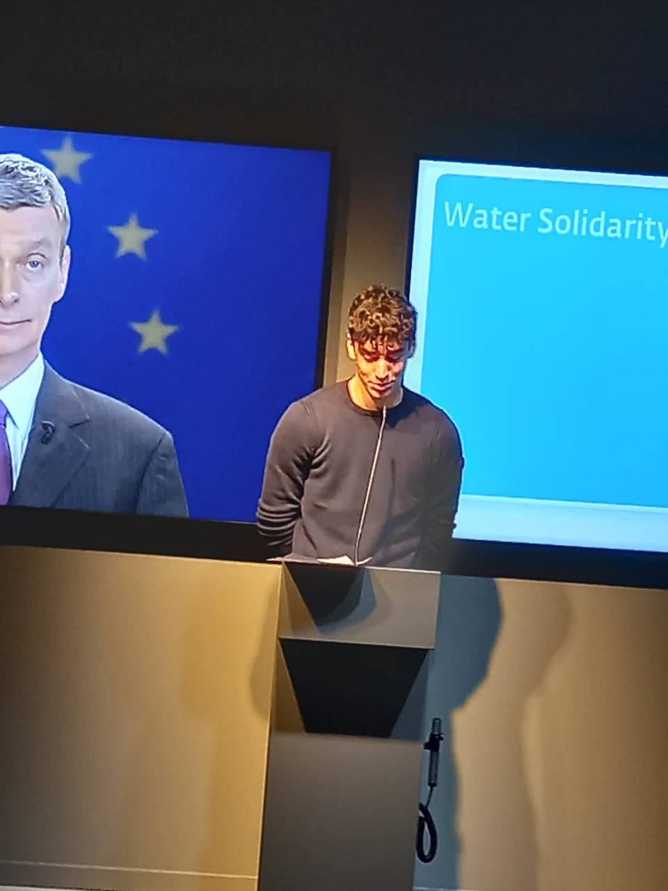
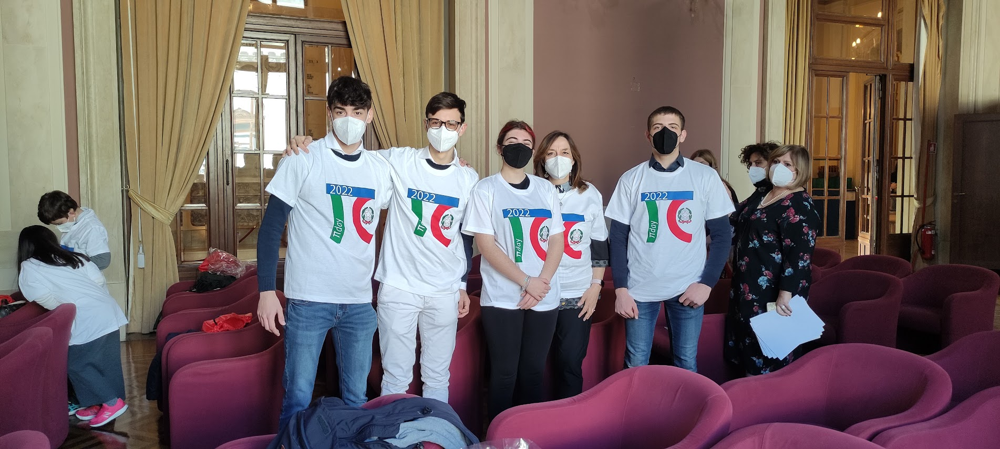
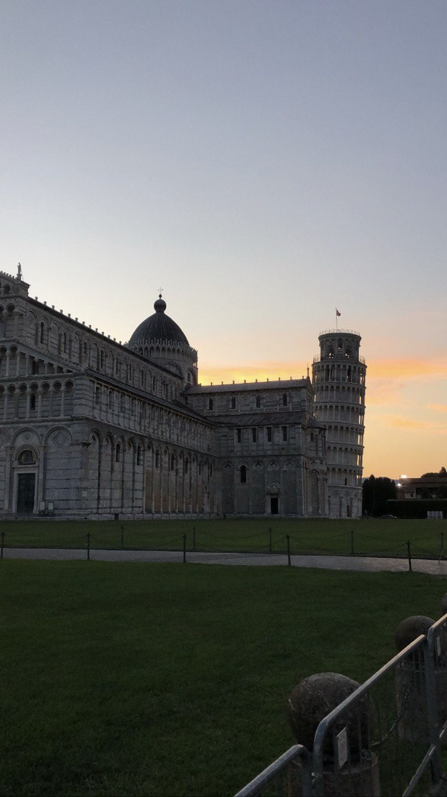
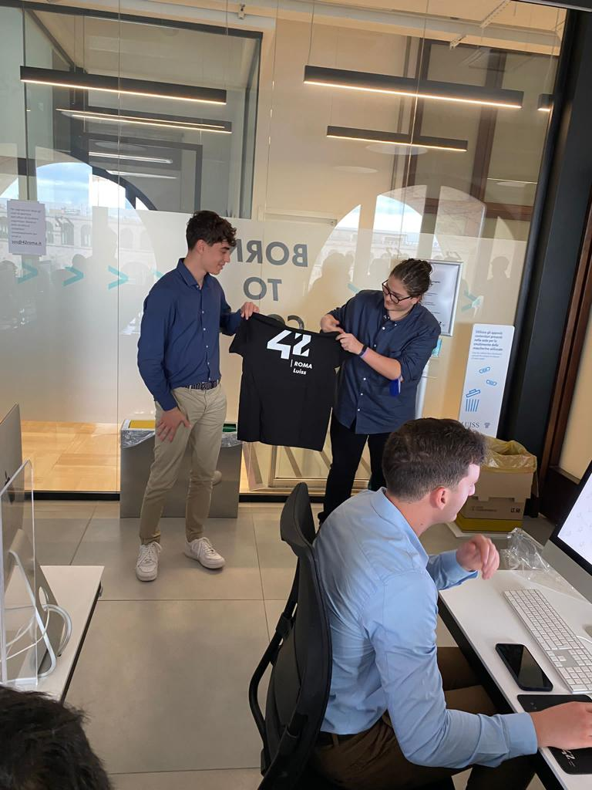
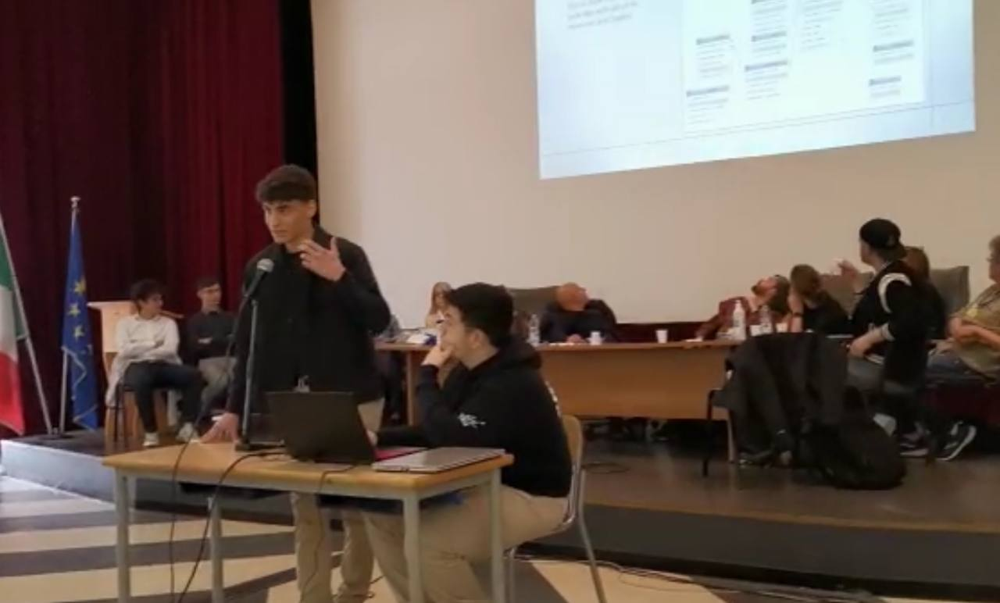
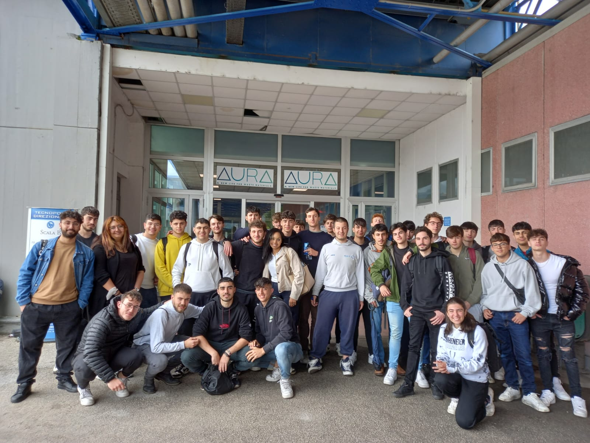

FORMAZIONE
NS12 (Microsoft C#) 👨💻
6 apr 2022 - 31 mag 2022
Partecipare al corso offerto dall'azienda NS12 è stato molto
emozionante. Dopo averci introdotto al linguaggio C#, ci hanno
dato due settimane per creare un programma in C#, la torre di
Hanoi, per consolidare le nostre conoscenze del linguaggio.
Alla fine di questo periodo, abbiamo partecipato a una gara
interna a Fermi per tre giorni, dedicando quattro ore al
giorno. L'obiettivo era creare un algoritmo che permettesse al
nostro personaggio di uscire da un labirinto. È stata
un'esperienza particolare, poiché avevamo la possibilità di
scegliere diversi approcci, come quello matematico o quello
basato sull'intelligenza artificiale. Nonostante avessi
trovato il metodo più veloce, sono arrivato secondo in questo
progetto, a causa del poco tempo a disposizione e non ho
potuto perfezionare l'algoritmo come avrei voluto. Alla fine
di questo progetto, ci hanno anche intervistato per valutare
la possibilità di lavorare nella loro azienda, nel caso
fossimo interessati.
LinkCampus (CyberSecurity) 🛡️
11 feb 2021 - 27 giu 2021
A soli 15 anni, ho partecipato alle gare di qualificazione di
CyberChallenge.it, che includevano logica e programmazione in
inglese. Nonostante fossi uno dei più giovani partecipanti,
sono riuscito a classificarmi in una stretta graduatoria
regionale. Questo mi ha dato l'opportunità di partecipare al
corso di cybersecurity, anche insieme a studenti universitari
avanzati. Questo corso è stato estremamente utile per me:
innanzitutto, mi ha fornito solide basi sulla sicurezza
informatica, inclusi gli attacchi via web e molto altro. In
secondo luogo, mi ha fatto comprendere che non è una
disciplina che vorrei perseguire come studi futuri. Il
progetto si è concluso con una cerimonia in cui ho avuto
l'opportunità di stringere la mano al Ministro della Difesa
italiano. Nel contesto delle gare nazionali italiane, sono
riuscito a classificarmi al 13º posto su 30 partecipanti,
anche se solo i primi 5 sarebbero stati convocati.
Oracle (Java) ☕
7 giu 2021 - 11 lug 2021
Durante il corso Oracle, ho iniziato affrontando semplici
esercizi in cui dovevo unire pezzi di codice già creati. Man
mano che il corso procedeva, le attività si sono fatte sempre
più complesse, conducendomi a sviluppare progetti completi che
includevano l'implementazione di classi, metodi e altre
strutture avanzate.
Cisco 🌐
27 mar 2022 - 31 mag 2022
Ho conseguito la certificazione Cisco per le reti, ottenendo
un punteggio del 98% all'esame finale. Questa certificazione è
ha rafforzato ulteriormente le mie competenze nel campo delle
reti e delle infrastrutture IT.
Accenture (Crowdsourcing) 👥
11 apr 2021 - 14 apr 2021
Ho partecipato al corso di Crowdsourcing offerto dalla
Fondazione Italiana Accenture. Questo corso mi ha fornito una
solida comprensione del Crowdsourcing e dei suoi vantaggi per
il mondo aziendale. Ho imparato come raccogliere idee e
soluzioni da una vasta comunità di persone e come integrarle
nei miei progetti professionali, simulando proprio
un'esepriezna simile, dove ci era chiesto di creare una nostra
idea e svilupparla.
ENGLISH LEVEL
Listening
Reading
Writing
Speaking
A1
A2
B1
B2
C1
C2
COMPETENZE
CSS
PHP
MySQL
C++
C#
HTML
Java
Python
JavaScript
ESPERIENZE

19 dicemebre 2022
Parlamento Europeo
Un progetto breve ma estremamente interessante in cui abbiamo
simulato sedute del Parlamento europeo. Ognuno di noi ha avuto
l'opportunità di rappresentare un dipartimento specifico e
difendere le proprie idee. Al termine delle simulazioni, siamo
stati chiamati ad esporre le nostre tesi riguardo a diverse
problematiche e proporre soluzioni. Nonostante la natura del
progetto fosse puramente accademica, sono stato felice di aver
ricevuto il maggior numero di voti a favore per il mio
partito.

14 Marzo 2022
Pi Greco Day
Per partecipare alla sfida sono dovuto arrivare tra i migliori
4 studenti scolastici alle prove matematiche di archimede.
Posizionandomi al 3 posto mi sono guadagnato il ruolo di
capitano al PiGreco Day. Il fermi il giorno 14-3-2022
al MIUR si posiziona al primo posto

26 giugno 2022 - 1 luglio 2022
Normale Di Pisa
Circa 40 ragazzi in tutta Italia sono stati selezionati per
attendere una delle università più prestigiose di tutti i
tempi. Ci hanno alloggiato in un dormitorio in cui
condividevamo la stanza con un compagno di stanza. Ho fatto
molte amicizie con ragazzi fantastici e partecipato a corsi
universitari di ogni tipo.

10 Novembre 2022
Roma LUISS
Primo classificato alle gare di logica.

27 marzo 2023 - 31 marzo 2023
Progetto Erasmus
Nell'ultima settimana di marzo sono arrivati al Fermi dei
ragazzi olandesi. Questi ragazzi sono stati divisi in gruppi e
hanno partecipato a diversi corsi tra cui vi erano:
informatica, automazione ecc.. Io sono stato il
"manager" del dipartimento informatico, organizzando le
lezioni e introudcento ai ragazzi olandesi argomenti come
programmazione in html, php e css. Alla fine del corso, i
ragazzi hanno sviluppato i loro siti web e hanno partecipato a
una competizione, in cui solo una coppia poteva vincere.

16 maggio 2023
Progetto RAEE
Io e la mia classe abbiamo lavorato sodo per un intero anno,
raccogliendo dati e statistiche sulle terre rare. Abbiamo
scoperto che il riciclaggio scorretto dei dispositivi
elettronici porta allo spreco di materiali preziosi e
all'aumento dei prezzi di tutti i tipi di apparecchi
elettronici. Abbiamo cercato di sensibilizzare professori e
studenti su questo tema e, con il loro prezioso aiuto, abbiamo
raccolto molti telefoni inutilizzati. È stato bello vedere
così tante persone unite a noi per contribuire a questo
progetto. La nostra avventura, che continuerà con le classi
future, si è conclusa con una visita all'azienda AURA in
Abruzzo, dove ci hanno mostrato come riciclano ogni tipo di
oggetto. È stato davvero interessante osservare tutto il
processo e capire come possiamo fare la nostra parte per
proteggere l'ambiente. In generale, questo progetto è stato
molto significativo per noi.